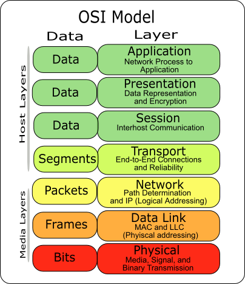

This post is adapted from some homework I received at the University of Tokyo (the original question was: "Why can the Internet system scale up to a global scale? The discussion should be carried out from the viewpoint of Internet's architectural features.").
The Internet is built upon layers of encapsulated protocols, each layer addressing a specific problem and enabling the layers above it. This abstraction is depicted by the Open Systems Interconnection (OSI) model. It has seven layers, but for the sake of this explanation, let us consider the following four-layer simplification:
- Physical layer: at first, computers are connected by wires on a Local Area Network (LAN). Two computers can be connected by a direct wire. For more than two, one can use an Ethernet hub. Contrary to a switch, which has an embedded computer and performs routing, a hub is a simple electrical device that relays signal from the input of any port to the outputs of every other port. Circuits in the network cards of each computer perform the analog/digital conversion between bits and electrical signals transiting in their wires. At the physical layer, every machine communicates with every other on a shared medium.
- Network layer: as the number of computer grows, switches are added to the network and the topology becomes hierarchical. Addressing protocols become necessary: each computer is affixed a given address and machines communicate on a one-to-one basis. Computing power added to the switches eliminates unnecessary use of the electrical medium, as the only wires used to relay a message are those on a path between the sender and the recipient. The Internet Protocol (IP) in TCP/IP is devoted to this task.
- Transport layer: at the network layer, only single packets are exchanged between two machines; the transport layer abstracts logical groups of packets into connections. Additional guarantees such as full delivery checks (asserting whether every bit sent from the source has been received by the recipient) are enforced at this stage. The Transmission Control Protocol (TCP) in TCP/IP is devoted to this task.
- Application layer: modern operating systems abstract the three previous layers as network interfaces and provide mechanisms such as sockets to use them. This uppermost layer is that of user applications such as Web browsers or SSH clients. It is also that of high level protocols such as the Domain Name System (DNS), which converts human-readable text representations to IP addresses, or the Border Gateway Protocol (BGP) used to exchange routing and reachability information between networks.
Note how the first three layers address an increasing network scale: the physical layer allows for local networks using electrical circuitry, the network layer allows for hierarchical combination of networks using addresses and routing by switches, and the transport layer is used in the interconnection of networks (e.g. in BGP). These three fundamental layers are a first structural explanation for the scaling-up of the Internet.
Network Layer – Hierarchy and Authorities. In the IPv4 protocol, an IP address is a sequence of four bytes ordered from a global to a local scale. Worldwide, a central authority (the Internet Assigned Numbers Authority, IANA, a nonprofit private American corporation) devolves the management of some IP prefixes to other authorities known as Regional Internet Registries. In turn, these regional registries devolve the management of longer prefixes to Local Internet Registries, and the process repeats until reaching a network managed by a single entity such as an Internet Service Provider (ISP) or a company network. Note how the hierarchy encoded in software protocols gets reflected into human institutions. Our argument generalizes from this example: humans have scaled up the Internet to a global scale thanks to hierarchy, an architectural pattern well established in human societies that we see reflected in both software protocols and human institutions.
Transport Layer – The Economy of Bandwidth. Contrary to its bootstrapping days, when it was centralized and publicly funded, the Internet today is privatized. Local networks, such as company or personal Wi-Fi networks, are connected to ISPs via modem or set-top boxes. In developed countries such as France, Japan or the United States of America, these customer ISPs are a handful of big companies reaching to national markets (e.g. Comcast in the USA, Orange in France, ...). Their networks are connected nationally; internationally, customer ISPs connect their networks to backbone ISPs (e.g. Level 3, which operates transatlantic cables between West-European and American networks). Through transit agreements, ISPs exchange bandwidth for money, thus creating a business for bandwidth where the money paid by customers for “Internet access” flows from customer ISPs to other companies contributing to the network connectivity and performance. If the Internet is significant in today's societies, the bandwidth business is significant too and battles between big ISPs can be fierce, as was illustrated last week by a battle of public statements between Verizon and Level 3 where each party blamed the other for network congestion.
It is now time to put this reflection to a rest. We have discussed three architectural patterns contributing each to the scale of the Internet: layers, hierarchy and interconnection. We described how encapsulated layers of software protocols enable successive scaling of computer networks. We then noted how human societies have produced hierarchies of institutions reflecting that of the network. Finally, following the interconnection of privately-owned networks, we pointed out how a market for bandwidth supports the expansion and maintenance of infrastructure.

Discussion ¶
Feel free to post a comment by e-mail using the form below. Your e-mail address will not be disclosed.